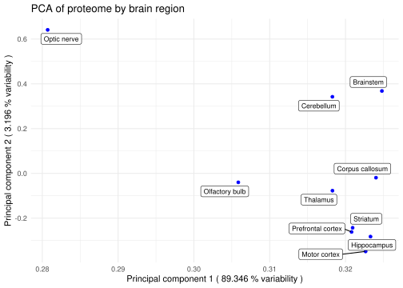
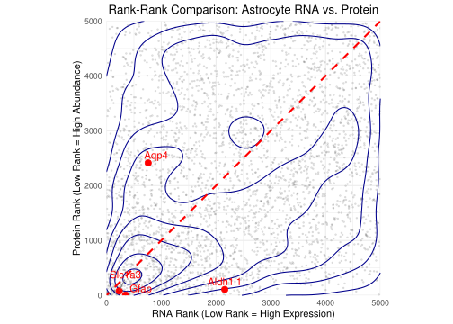
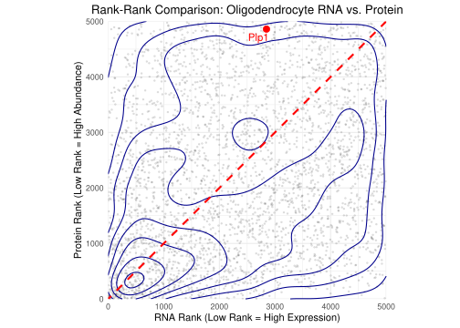
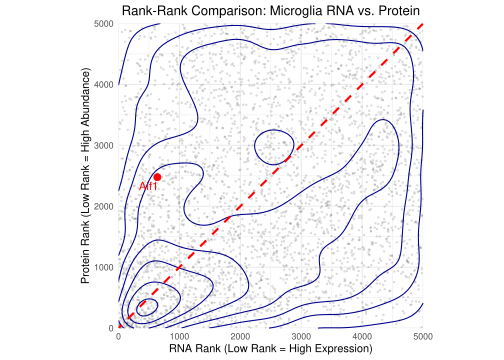
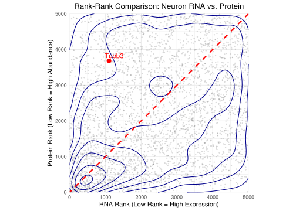

library("knitr")alltest
Library
Libraries
── Attaching core tidyverse packages ──────────────────────── tidyverse 2.0.0 ──
✔ dplyr 1.1.4 ✔ readr 2.1.5
✔ forcats 1.0.0 ✔ stringr 1.5.1
✔ ggplot2 3.5.1 ✔ tibble 3.2.1
✔ lubridate 1.9.4 ✔ tidyr 1.3.1
✔ purrr 1.0.4
── Conflicts ────────────────────────────────────────── tidyverse_conflicts() ──
✖ dplyr::filter() masks stats::filter()
✖ dplyr::lag() masks stats::lag()
ℹ Use the conflicted package (<http://conflicted.r-lib.org/>) to force all conflicts to become errorsLoad excel into R object
supp_1 <- readxl::read_xlsx(path = "../data/_raw/41593_2015_BFnn4160_MOESM38_ESM_sup1.xlsx", skip = 1)
supp_2 <- readxl::read_xlsx(path = "../data/_raw/41593_2015_BFnn4160_MOESM39_ESM_sup2.xlsx", skip = 2)
supp_3 <- readxl::read_xlsx(path = "../data/_raw/41593_2015_BFnn4160_MOESM40_ESM_sup3.xlsx")
supp_5 <- readxl::read_xlsx(path = "../data/_raw/41593_2015_BFnn4160_MOESM42_ESM_sup5.xlsx", skip = 1)
supp_17 <- readxl::read_xlsx("../data/_raw/EMS116660-supplement-Table_S17.xlsx", skip = 1)Creating loaded files with the data
dir.create("../data/dirty_data", recursive = TRUE, showWarnings = FALSE)write_tsv(supp_1, "../data/dirty_data/supp_1.tsv")
write_tsv(supp_2, "../data/dirty_data/supp_2.tsv")
write_tsv(supp_3, "../data/dirty_data/supp_3.tsv")
write_tsv(supp_5, "../data/dirty_data/supp_5.tsv")
write_tsv(supp_17, "../data/dirty_data/supp_17.tsv")Libraries & Functions
library("tidyverse")
library("dplyr")
library("janitor")
source("../R/99_proj_func.R")General cleaning guidelines for this project
Subsetting columns that we’re not going to use for this project.
Cleaning column names with the
janitorlibrary.Skip over the first and/or second lines of the excel files. (This is done on
data_loading.qmdto have the appropiate data structure from the start).Drop NAs (Check with the NA_check function if it’s necessary or harmful for the data)
Cleaning table 2
Cleaning table 3
[1] "The total % of NA values are: 22.64"#Transforming NaNs into NAs to drop them and cleaning column names
clean_3 <- clean_3 |>
mutate(across(everything(),
~ replace(., is.nan(.), NA))) |>
drop_na()
#Important note on removing NAs:
#NAs compose 22.64% of the total values, however drop_na() removes ANY rows containing NAs
#Therefore a substantial data loss is obtained and data analysis should be conducted with caution
rows_in_dirty <- nrow(dirty_3) #19501 entries
rows_in_clean <- nrow(clean_3) #11062 entries
pct_lost <- (rows_in_dirty - rows_in_clean) / rows_in_dirty *100
print(
paste("The total % of lost rows are", round(pct_lost, 2))
)[1] "The total % of lost rows are 43.27"Cleaning table 5
[1] 0.3339755Cleaning table 17
dirty_17 <- read_tsv(file = "../data/dirty_data/supp_17.tsv", show_col_types = FALSE)
clean_17 <- dirty_17 |>
clean_names()
NA_check(clean_17) #17.55% of the data is NAs[1] 17.55202#BUT if an NA check is conducted on the subset that will be used afterwards for the analysis, it doesn't have any NAs!
NA_check(clean_17 |>
select(14:23)) #0% NAs!![1] 0#So for this specific table it was decided that the NA drop can be skipped, since it would only hurt the analysis. Writing clean data to tables
#Create directory in case it doesn't exist already
dir.create("../data/clean_data", recursive = TRUE, showWarnings = FALSE)
write_tsv(clean_2, "../data/clean_data/clean_2.tsv")
write_tsv(clean_3, "../data/clean_data/clean_3.tsv")
write_tsv(clean_5, "../data/clean_data/clean_5.tsv")
write_tsv(clean_17, "../data/clean_data/clean_17.tsv")Augmenting data
library("tidyverse")
source("../R/99_proj_func.R")Table 2
clean_2 <- read_tsv(file = "../data/clean_data/clean_2.tsv", show_col_types = FALSE)
#Computing medians and log fold change of the gene expression among different cell types
panel_df <- clean_2 |>
rowwise() |>
mutate(
logLFQ_median = median(c_across(starts_with("logLFQ_")), na.rm = TRUE),
logFC_astro = logLFQ_astro - logLFQ_median,
logFC_micro = logLFQ_micro - logLFQ_median,
logFC_neuron = logLFQ_neuron - logLFQ_median,
logFC_oligo = logLFQ_oligo - logLFQ_median
) |>
ungroup()
#Constructing the table:
astro_df <- panel_df |>
select(gene, logLFQ = logLFQ_astro, logFC = logFC_astro) |>
mutate(type = "Astrocytes")
micro_df <- panel_df |>
select(gene, logLFQ = logLFQ_micro, logFC = logFC_micro) |>
mutate(type = "Microglia")
neuron_df <- panel_df |>
select(gene, logLFQ = logLFQ_neuron, logFC = logFC_neuron) |>
mutate(type = "Neurons")
oligo_df <- panel_df |>
select(gene, logLFQ = logLFQ_oligo, logFC = logFC_oligo) |>
mutate(type = "Oligodendrocytes")
all_df <- bind_rows(
astro_df, micro_df, neuron_df, oligo_df
)
#Adding the markers of each cell type
astro_markers <- c("Aqp4", "Gfap", "Glast", "Aldh1l1")
micro_markers <- c("Iba1", "Tlr2", "Tlr7", "CD86")
neuron_markers <- c("Snap25", "Tubb3", "Calb1", "Syt1")
oligo_markers <- c("Cnp1", "Sox10", "Mbp", "Mag", "Mog", "Plp1")
all_df <- all_df |>
mutate(
category = case_when(
gene %in% astro_markers ~ "Astrocyte markers",
gene %in% micro_markers ~ "Microglia markers",
gene %in% neuron_markers ~ "Neuron markers",
gene %in% oligo_markers ~ "Oligodendrocyte markers",
TRUE ~ "Other"
)
) |>
filter(is.finite(logFC), is.finite(logLFQ))
# Writing the table to augmented data folder data/data_augmented in tsv formatTable 3
clean_3 <- read_tsv(file = "../data/clean_data/clean_3.tsv", show_col_types = FALSE)rna_prefixes <- c(
rna_oligo_div1 = "rpkm_oligodendrocytes_div1_",
rna_oligo_div2_5 = "rpkm_oligodendrocytes_div2_5_",
rna_oligo_div4 = "rpkm_oligodendrocytes_div4_",
rna_microglia = "rpkm_adult_microglia_",
rna_astro = "rpkm_astrocytes_",
rna_neuron_div5 = "rpkm_cortical_neurons_div05_",
rna_neuron_div10 = "rpkm_cortical_neurons_div10_"
)The values in the plots are log2 transformed so that’s the transformation we are going to apply to proteome and transcriptome. We will use the log2p1 function from 99_proj_func.R.
Also we can see that the there are cell types used im most of the plots. In the table there are 3 measurements for each cell type (adult_microglia_1, adult_microglia_2, adult_microglia_3). To get one value to compare cell types we will take the mean. That way we can get a more reliable estimate for each cell type by getting rid of experimental bias in each measurement and random noise. We are doing it using the mean_across_col function from 99_proj_func.R.
aug_3 <- clean_3 |>
mutate(across(starts_with("rpkm_"), log2p1)) |> # log2(x+1) on all rpkm columns
mean_across_col(rna_prefixes) #|> # calculate means per cell type
# as an output we will have the old columns + mean columns for each cell typeTable 5
clean_5 <- read_tsv(file = "../data/clean_data/clean_5.tsv", show_col_types = FALSE)prot_prefixes <- c(
prot_microglia = "adult_microglia_",
prot_astro = "astrocytes_",
prot_neuron_div5 = "neurons_div05_",
prot_neuron_div10 = "neurons_div10_",
prot_oligo_div1 = "oligodendrocytes_div1_",
prot_oligo_div2_5 = "oligodendrocytes_div2_5_",
prot_oligo_div4 = "oligodendrocytes_div4_"
)We will do the same transformations to table 5 as we did to table 3.
aug_5 <- clean_5 |>
mutate(across(adult_microglia_1:oligodendrocytes_div4_3, log2p1)) |> # applying log2
mean_across_col(prot_prefixes) |> #df is provided by pipe
mutate(gene_name = gene_names) #|> #renaming the column for future merging with rna df
# as an output we will have the old columns + mean columns for each cell typedir.create("../data/augmented_data", recursive = TRUE, showWarnings = FALSE)
write_tsv(all_df, "../data/augmented_data/table_2_log.tsv")
write_tsv(aug_3, "../data/augmented_data/table_3_log_means.tsv")
write_tsv(aug_5, "../data/augmented_data/table_5_log_means.tsv")The expression data used in this project was retrieved from Supplementary tables 2, 3, 5, and 17 of (Sharma et. al, 2015). Tables 2, 5, and 17 collect protein expression data normalized as log LFQ intensity, a metric used to compare the abundance of the same protein across multiple samples or conditions. Table 3 presents RNA-sequencing data expressed in RPKM (Reads Per Kilobase of transcript per Million mapped reads). In tables 2, 3, and 5, each of the main cell types (neurons, oligodendrocytes, microglia, and astrocytes) has three technical replicated. In case of cultures cells, oligodendrocytes and neurons are also repeated at different numbers of days in vitro (div).
Data 2
The clean_2 data frame contains log₂ LFQ protein intensities measured in four purified mouse brain cell types: astrocytes, microglia, neurons, and oligodendrocytes. LFQ is a metric used to represent the relative abundance of each protein across the different cell-type samples.
Because the LFQ intensities in this dataset are already provided in log₂ scale, they can be directly compared between samples without further transformation. To focus the analysis on cell-type–specific protein expression, we keep only the first six columns of the dataset, which correspond to:
Gene name
Protein name
Isolated Astrocytes
Isolated Microglia
Isolated Neurons
Isolated Oligodendrocytes
To evaluate enrichment of each protein in a given cell type, we compute a reference abundance using the median log₂ LFQ intensity across all major brain samples. This provides a biologically meaningful baseline that reflects the “whole brain” proteome against which each isolated cell type can be compared. Using this reference, we calculate the log₂ fold change for each protein and each cell type:
log₂ (FC cell type)= log₂(LFQ cell type)−median log₂(LFQ)
This augmented dataset enables identification of cell-type enriched proteins and potential marker candidates, in line with the analyses presented in Figure 4 of the original publication.
Data 3
Important notes
The data is extracted from supplementary table 3
The dataset has been cleaned + augmented prior to this script
All data within RPKM columns is already log2 transformed
Means of cell type specific gene expression is already calculated and stored within RNA columns
There are 3 overall classes of column names:
Gene name
Cell type
RNA mean
Within the cell type category, the following cells are stored
Oligodendrocytes (div1_1-1_3 + div 2_5 1-3 + div 4 1-3)
Adult microglia 1-3
Atrocytes 1-3
Cortical neurons div05 (1-3) + dig 10 (1-3)
RPKM (reads per kilobase of transcript per million mapped reads) is the unit used to measure gene expression of RNA
Data 5
clean_5 <- read_tsv(file = "../data/clean_data/clean_5.tsv", show_col_types = FALSE)
head(clean_5)# A tibble: 6 × 26
gene_names protein_names adult_microglia_1 adult_microglia_2 adult_microglia_3
<chr> <chr> <dbl> <dbl> <dbl>
1 Vim Vimentin 175220000000 185940000000 190360000000
2 Hsp90ab1 Heat shock p… 235370000000 226610000000 207090000000
3 Ywhae 14-3-3 prote… 78468000000 80754000000 82039000000
4 Hspa8 Heat shock c… 125120000000 110500000000 115140000000
5 Atp5a1 ATP synthase… 89727000000 90325000000 92952000000
6 Myh9 Myosin-9 271440000000 282960000000 290450000000
# ℹ 21 more variables: astrocytes_1 <dbl>, astrocytes_2 <dbl>,
# astrocytes_3 <dbl>, neurons_div05_1 <dbl>, neurons_div05_2 <dbl>,
# neurons_div05_3 <dbl>, neurons_div10_1 <dbl>, neurons_div10_2 <dbl>,
# neurons_div10_3 <dbl>, neurons_div15_1 <dbl>, neurons_div15_2 <dbl>,
# neurons_div15_3 <dbl>, oligodendrocytes_div1_1 <dbl>,
# oligodendrocytes_div1_2 <dbl>, oligodendrocytes_div1_3 <dbl>,
# oligodendrocytes_div2_5_1 <dbl>, oligodendrocytes_div2_5_2 <dbl>, …The clean_5 data frame contains protein expression data of cultured cell types per individual replicate. As in clean_2 , the data is expressed in log LFQ intensity, allowing us to both validate our replicates, and to determine the preferential expression of each cultured cell type.
For these goals, we are interested only in columns 1-26, while we can discard information about sequence coverage, molecular weight, and protein IDs.
# view(clean_5)
dim(clean_5)[1] 9371 26colnames(clean_5)[1:26] [1] "gene_names" "protein_names"
[3] "adult_microglia_1" "adult_microglia_2"
[5] "adult_microglia_3" "astrocytes_1"
[7] "astrocytes_2" "astrocytes_3"
[9] "neurons_div05_1" "neurons_div05_2"
[11] "neurons_div05_3" "neurons_div10_1"
[13] "neurons_div10_2" "neurons_div10_3"
[15] "neurons_div15_1" "neurons_div15_2"
[17] "neurons_div15_3" "oligodendrocytes_div1_1"
[19] "oligodendrocytes_div1_2" "oligodendrocytes_div1_3"
[21] "oligodendrocytes_div2_5_1" "oligodendrocytes_div2_5_2"
[23] "oligodendrocytes_div2_5_3" "oligodendrocytes_div4_1"
[25] "oligodendrocytes_div4_2" "oligodendrocytes_div4_3" The data has 9371 genes and 24 samples: 3 replicated for adult microglia, astrocytes, oligodendrocytes at 3 stages (div 1, 2.5, and 4), and neurons at 3 stages (div 5, 10, and 15).
zeros <- clean_5 |>
select(where(is.numeric)) |>
summarise(across(everything(), function(x) mean(x == 0)))
zeros# A tibble: 1 × 24
adult_microglia_1 adult_microglia_2 adult_microglia_3 astrocytes_1
<dbl> <dbl> <dbl> <dbl>
1 0.397 0.365 0.356 0.450
# ℹ 20 more variables: astrocytes_2 <dbl>, astrocytes_3 <dbl>,
# neurons_div05_1 <dbl>, neurons_div05_2 <dbl>, neurons_div05_3 <dbl>,
# neurons_div10_1 <dbl>, neurons_div10_2 <dbl>, neurons_div10_3 <dbl>,
# neurons_div15_1 <dbl>, neurons_div15_2 <dbl>, neurons_div15_3 <dbl>,
# oligodendrocytes_div1_1 <dbl>, oligodendrocytes_div1_2 <dbl>,
# oligodendrocytes_div1_3 <dbl>, oligodendrocytes_div2_5_1 <dbl>,
# oligodendrocytes_div2_5_2 <dbl>, oligodendrocytes_div2_5_3 <dbl>, …zeros_long <- zeros |>
pivot_longer(everything(), names_to = "sample", values_to = "zero_fraction")
ggplot(zeros_long, aes(x = sample, y = zero_fraction)) +
geom_col() +
coord_flip() +
labs(
title = "Fraction of Zero Intensities per Sample",
y = "Proportion of zeros",
x = "Sample"
)
clean_5 <- clean_5 |>
select(c(1:26))
stat_5 <- clean_5 |>
select(where(is.numeric)) |> # choosing the numeric columns
pivot_longer(everything(),
names_to = "columns",
values_to = "value") |>
group_by(columns) |>
summarise(
count = n(),
mean = mean(value, na.rm = TRUE),
median = median(value, na.rm = TRUE),
sd = sd(value, na.rm = TRUE),
min = min(value, na.rm = TRUE),
max = max(value, na.rm = TRUE)
)
stat_5# A tibble: 24 × 7
columns count mean median sd min max
<chr> <int> <dbl> <dbl> <dbl> <dbl> <dbl>
1 adult_microglia_1 9371 1932471100. 90307000 8995905381. 0 2.71e11
2 adult_microglia_2 9371 1915978821. 101520000 8704936864. 0 2.83e11
3 adult_microglia_3 9371 1940332867. 99127000 9016925350. 0 2.90e11
4 astrocytes_1 9371 1601970907. 50765000 11218916310. 0 7.74e11
5 astrocytes_2 9371 1738419620. 36434000 14149447218. 0 1.07e12
6 astrocytes_3 9371 1688172658. 31182000 12714482438. 0 8.60e11
7 neurons_div05_1 9371 1946037590. 120280000 10089552740. 0 2.98e11
8 neurons_div05_2 9371 1928545395. 116890000 10023548618. 0 3.12e11
9 neurons_div05_3 9371 1906560620. 121120000 9331993462. 0 2.95e11
10 neurons_div10_1 9371 1912701815. 120760000 9408520546. 0 2.88e11
# ℹ 14 more rowsper_protein_stat <- clean_5 |>
rowwise() |>
mutate(
mean = mean(c_across(where(is.numeric)), na.rm = TRUE),
sd = sd(c_across(where(is.numeric)), na.rm = TRUE)
) |>
select(gene_names, protein_names, mean, sd)
per_protein_stat# A tibble: 9,371 × 4
# Rowwise:
gene_names protein_names mean sd
<chr> <chr> <dbl> <dbl>
1 Vim Vimentin 2.29e11 2.77e11
2 Hsp90ab1 Heat shock p… 2.58e11 4.50e10
3 Ywhae 14-3-3 prote… 1.46e11 3.18e10
4 Hspa8 Heat shock c… 1.24e11 1.62e10
5 Atp5a1 ATP synthase… 1.24e11 3.00e10
6 Myh9 Myosin-9 1.22e11 9.70e10
7 Hist1h2bc;Hist1h2bh Histone H2B … 1.10e11 3.79e10
8 Aco2 Aconitate hy… 7.61e10 1.75e10
9 Gapdh;Gm2606;Gm5559;Gm10481;Gm4609;Gm10358;Gm3… Glyceraldehy… 7.25e10 2.45e10
10 Arhgdia Rho GDP-diss… 4.87e10 2.90e10
# ℹ 9,361 more rowsggplot(per_protein_stat, aes(x = mean)) +
geom_histogram(bins = 40) +
labs(
title = "Distribution of Protein Mean Intensities",
x = "Mean LFQ Intensity",
y = "Count"
)
table(sub("_[^_]+$", "", names(clean_5)[sapply(clean_5, is.numeric)]))
adult_microglia astrocytes neurons_div05
3 3 3
neurons_div10 neurons_div15 oligodendrocytes_div1
3 3 3
oligodendrocytes_div2_5 oligodendrocytes_div4
3 3 Data 17
head(clean_17)# A tibble: 6 × 58
gene_names protein_names brainstem_3 cerebellum_4 corpus_callosum_5
<chr> <chr> <dbl> <dbl> <dbl>
1 Swi5 <NA> 0.167 1.19 -0.792
2 Csmd2 <NA> -1.92 -1.34 0.299
3 Mlip <NA> -2.49 -2.86 1.55
4 Rsrc2 Arginine/serine-rich co… -1.96 0.800 -0.705
5 Pdf <NA> 0.145 0.209 0.275
6 Bin2 Bridging integrator 2 0.0184 -0.519 0.656
# ℹ 53 more variables: motor_cortex_6 <dbl>, olfactory_bulb_7 <dbl>,
# optic_nerve_8 <dbl>, prefrontal_cortex_9 <dbl>, striatum_10 <dbl>,
# thalamus_11 <dbl>, hippocampus_12 <dbl>,
# x4_fold_difference_in_atleast_1_brain_region_at_pval_0_05 <chr>,
# brainstem_14 <dbl>, cerebellum_15 <dbl>, corpus_callosum_16 <dbl>,
# motor_cortex_17 <dbl>, olfactory_bulb_18 <dbl>, optic_nerve_19 <dbl>,
# prefrontal_cortex_20 <dbl>, striatum_21 <dbl>, thalamus_22 <dbl>, …This data frame currently has a lot of columns which describe the intensity of RNA signal and proteins in different regions of the mouse brain.
We’re specially interested in the columns that describe the intensity of proteins. For this, the columns from 14 to 23 contain the right data.
For the PCA, the only needed data is the brain region and the intensity of signal, so the genes, protein names and everything can be dropped for the analysis.
Density plot
library(tidyverse)getwd()[1] "/net/pupil1/home/people/s253697/Projects/G7_final_proj/R"#Going back 1 step to open the file
rna_wide <- read_tsv("../data/augmented_data/table_3_log_means.tsv", show_col_types = FALSE)
#Checking the data again
#colnames(rna_data)
#View(rna_data)Data is read. Steps now:
Create a combined column, containing max RPKM across cell types
Tidy dataset (from wide –> long)
Group cells into 5 groups (cell types + combined)
Assess number of unique genes (per cell type)
Split data (4 cell types + combined)
Plot using ggplot (4 cell types + combined)
Step 1: Adding max RPKM values
rna_wide <- rna_wide |>
mutate(
rna_combined = pmax(
rna_oligo_div1, rna_oligo_div2_5, rna_oligo_div4,
rna_microglia, rna_astro,
rna_neuron_div5, rna_neuron_div10
)
)Step 2: Tidying dataset
rna_long <- rna_wide |>
select(gene_name, starts_with("rna_")) |>
pivot_longer(
cols = starts_with("rna_"),
names_to = "cell_type",
values_to = "log2_rpkm"
)
#Checking
#View(rna_long)
#The data is now tidy!Step 3: Group cells
rna_grouped <- rna_long |>
mutate(
cell_group = case_when(
str_detect(cell_type, "oligo") ~ "Oligodendrocytes",
str_detect(cell_type, "neuron") ~ "Neurons",
str_detect(cell_type, "astro") ~ "Astrocytes",
str_detect(cell_type, "microglia")~ "Microglia",
str_detect(cell_type, "combined") ~ "Combined",
TRUE ~ NA_character_
)
) |>
filter(!is.na(cell_group))
#Assessing the data
#View(rna_grouped)Step 4: Assess unique and repetitive gene counts
#Checking if genes appear several times within the dataset
#(how many rows within the rna_grouped dataset have the combination of cell + gene)
count_per_gene <- rna_grouped %>%
count(cell_group, gene_name) %>%
filter(n > 1)
#Display as range:
count_per_gene_summary <- count_per_gene %>%
group_by(cell_group) %>%
summarise(
min_n = min(n),
max_n = max(n),
.groups = "drop" #drop group after analysis
)
#Extracting to a printable format
count_per_gene_summary %>%
rowwise() %>%
mutate(msg = paste0(cell_group, ": Counts per gene ranges from ", min_n, " to ", max_n)) %>%
pull(msg) %>%
cat(sep = "\n")Astrocytes: Counts per gene ranges from 2 to 2
Combined: Counts per gene ranges from 2 to 2
Microglia: Counts per gene ranges from 2 to 2
Neurons: Counts per gene ranges from 2 to 4
Oligodendrocytes: Counts per gene ranges from 3 to 6Saving unique counts
# 4) Unique genes per cell_group (for counts)
rna_unique <- rna_grouped |>
distinct(cell_group, gene_name, .keep_all = TRUE)
n_all <- rna_unique |>
count(cell_group, name = "n_all")
n_subset <- rna_unique |>
filter(log2_rpkm >= 1) |>
count(cell_group, name = "n_subset")
n_counts <- n_all |>
left_join(n_subset, by = "cell_group")Step 5: Split data
Done to enable separate plotting
#All cell specific values
rna_all_main <- rna_grouped |>
filter(cell_group != "Combined")
#Extracted values above the threshold of RPKM >= 1:
rna_sub_main <- rna_all_main |>
filter(log2_rpkm >= 1)
#Combined cell values
rna_all_combined <- rna_grouped |>
filter(cell_group == "Combined")
#Extract ones above the threshold
rna_sub_combined <- rna_all_combined |>
filter(log2_rpkm >= 1)
#Count corresponding values
n_counts_main <- n_counts |>
filter(cell_group != "Combined")
n_counts_combined <- n_counts |>
filter(cell_group == "Combined")Output: Total number of genes, compared to number of genes within the subset (above the threshold)
n_counts_main# A tibble: 4 × 3
cell_group n_all n_subset
<chr> <int> <int>
1 Astrocytes 11061 10035
2 Microglia 11061 9006
3 Neurons 11061 9452
4 Oligodendrocytes 11061 9959n_counts_combined# A tibble: 1 × 3
cell_group n_all n_subset
<chr> <int> <int>
1 Combined 11061 10821Step 6: Plots
Saving x axis values
#Defining a shared x axis
x_scale <- scale_x_continuous(
limits = c(-5, 17),
breaks = seq(-5, 15, by = 5)
)Cell type specific plot
plot_celltypes <- ggplot() +
geom_density(
data = rna_all_main,
aes(x = log2_rpkm, group = cell_group),
color = "black"
) +
geom_density(
data = rna_sub_main,
aes(x = log2_rpkm, group = cell_group),
color = "blue"
) +
facet_wrap(~ cell_group, nrow = 2, ncol = 2) +
x_scale +
labs(
title = "Gene expression levels (RNA) per Cell Type",
x = expression("RPKM (log"[2]*")"),
y = "Density"
) +
theme_minimal() +
geom_text(
data = n_counts_main,
aes(x = 10, y = 0.19, label = format(n_all, big.mark = ",")),
hjust = 1, vjust = 1, color = "black", size = 3
) +
geom_text(
data = n_counts_main,
aes(x = 10, y = 0.17, label = format(n_subset, big.mark = ",")),
hjust = 1, vjust = 1, color = "blue", size = 3
)
plot_celltypes
ggsave("../results/RNA_density_plot_celltype.png", plot_celltypes, dpi = 300)Saving 7 x 5 in imageCombined plot
plot_combined <- ggplot() +
geom_density(
data = rna_all_combined,
aes(x = log2_rpkm),
color = "black"
) +
geom_density(
data = rna_sub_combined,
aes(x = log2_rpkm),
color = "blue"
) +
x_scale +
labs(
title = "Combined cell types",
x = expression("RPKM (log"[2]*")"),
y = "Density"
) +
theme_minimal() +
geom_text(
data = n_counts_combined,
aes(x = 10, y = 0.19, label = format(n_all, big.mark = ",")),
hjust = 1, vjust = 1, color = "black", size = 3
) +
geom_text(
data = n_counts_combined,
aes(x = 10, y = 0.17, label = format(n_subset, big.mark = ",")),
hjust = 1, vjust = 1, color = "blue", size = 3
)
plot_combined
ggsave("../results/RNA_density_plot_combined.png", plot_celltypes, dpi = 300)Saving 7 x 5 in imageLibraries
Data loading
Proteomics data
clean_5 <- clean_5 |>
select(c(3:26)) |>
mutate(across(everything(), as.numeric)) |>
rename_with(~ str_remove(.x, "adult_"))Correlation
corr_mat_p <- cor(clean_5, use = "pairwise.complete.obs", method = "pearson")
corr_long_p <- cluster_cor_mat(corr_mat_p)Plotting
proteomics <- corr_long_p |>
ggplot(aes(rep1, rep2, fill= correlation)) +
ggtitle('Proteomics data') +
geom_tile(aes(fill = correlation), colour = "black") +
scale_fill_gradientn(colors = c('blue', 'white', 'red')) +
theme(axis.text.x = element_text(angle = 45, hjust = 1),
axis.title = element_blank(),
plot.title = element_text(face = "bold", hjust = 0.5))
ggsave(file = "../results/Proteomics_Heatmap.jpg", plot = proteomics)Saving 7 x 5 in imageTransriptomics data
clean_3 <- clean_3 |>
select(c(2:22)) |>
mutate(across(everything(), as.numeric)) |>
rename_with(~ .x |>
str_replace("rpkm_", "") |>
str_remove("adult_") |>
str_remove("cortical_"))Correlation
corr_mat_t <- cor(clean_3, use = "pairwise.complete.obs", method = "pearson")
corr_long_t <- cluster_cor_mat(corr_mat_t)Plotting
transcriptomics <- corr_long_t |>
ggplot(aes(rep1, rep2, fill= correlation)) +
ggtitle('Transcriptomics data') +
geom_tile(aes(fill = correlation), colour = "black") +
scale_fill_gradientn(colors = c('blue', 'white', 'red')) +
theme(axis.text.x = element_text(angle = 45, hjust = 1),
axis.title = element_blank(),
plot.title = element_text(face = "bold", hjust = 0.5))
ggsave(file = "../results/Transcriptomics_Heatmap.jpg", plot = transcriptomics)Saving 7 x 5 in imageThe heatmap between proteome and transcriptome across cell types.
library("tidyverse")
library("ggplot2")Loading the data
aug_3 <- read_tsv(file = "../data/augmented_data/table_3_log_means.tsv",
show_col_types = FALSE) |>
select(rna_oligo_div1:rna_neuron_div10, gene_name)
aug_5 <- read_tsv(file = "../data/augmented_data/table_5_log_means.tsv",
show_col_types = FALSE) |>
select(gene_name, protein_names, prot_microglia:prot_oligo_div4) Merging the tables
First of all we need to merge two datasets on gene_name
In the initial table we had multiple gene names in one cell. Mass spectrometry measures short peptides and proteins can have the same peptide sequences. So we cannot say for sure which protein and which gene the peptide came from that’s why we list multiple genes. Also in the gene name column there can be different name notations.
If we put the gene names from one protein to different rows, we create fake disagreement between RNA and proteins beacuse even if the protein is highly presented the RNA for some of the genes in its group can be very low.
Also when we replicate one gene multiple times, we create correlated rows, which violates the mathematical assumptions of Pearson correlation.
Keeping only one gene per protein
So the reasonable thing to do here is to keep one gene in each protein raw, we will keep the first gene name extracted from the sequence of genes.
Why the first gene in the annotation is the correct one to keep? In proteomics tools the first gene listed represents the “leading protein” of the protein group. Even if the table shows one row for one protein, that protein may be the representative of a protein group.
prot_one_gene <- aug_5 |>
mutate(gene_name = str_split(gene_name, ";") |> map_chr(1)) #extracting the first gene and keeping it
#prot_one_geneMerging
prot_rna_merged <- inner_join(prot_one_gene, aug_3, by = "gene_name")Warning in inner_join(prot_one_gene, aug_3, by = "gene_name"): Detected an unexpected many-to-many relationship between `x` and `y`.
ℹ Row 3199 of `x` matches multiple rows in `y`.
ℹ Row 271 of `y` matches multiple rows in `x`.
ℹ If a many-to-many relationship is expected, set `relationship =
"many-to-many"` to silence this warning.prot_rna_merged # joined table with duplicates in protein names and it's okay, no correlation in data# A tibble: 7,658 × 16
gene_name protein_names prot_microglia prot_astro prot_neuron_div5
<chr> <chr> <dbl> <dbl> <dbl>
1 Vim Vimentin 37.4 39.7 34.2
2 Hsp90ab1 Heat shock protein HSP … 37.7 37.4 38.0
3 Ywhae 14-3-3 protein epsilon 36.2 37.3 37.4
4 Hspa8 Heat shock cognate 71 k… 36.8 36.8 36.8
5 Atp5a1 ATP synthase subunit al… 36.4 36.6 37.0
6 Myh9 Myosin-9 38.0 37.9 34.3
7 Hist1h2bc Histone H2B type 1-C/E/… 36.0 36.5 37.3
8 Aco2 Aconitate hydratase, mi… 35.6 36.2 36.0
9 Gapdh Glyceraldehyde-3-phosph… 36.9 36.0 35.7
10 Arhgdia Rho GDP-dissociation in… 36.0 35.7 34.1
# ℹ 7,648 more rows
# ℹ 11 more variables: prot_neuron_div10 <dbl>, prot_oligo_div1 <dbl>,
# prot_oligo_div2_5 <dbl>, prot_oligo_div4 <dbl>, rna_oligo_div1 <dbl>,
# rna_oligo_div2_5 <dbl>, rna_oligo_div4 <dbl>, rna_microglia <dbl>,
# rna_astro <dbl>, rna_neuron_div5 <dbl>, rna_neuron_div10 <dbl>Calculation of correlation
mat <- prot_rna_merged |>
select(starts_with("prot_"), starts_with("rna_"))
prot_mat <- mat |>
select(starts_with("prot_")) |>
as.matrix()
rna_mat <- mat |>
select(starts_with("rna_")) |>
as.matrix()
corr_mat <- cor(prot_mat, rna_mat, use = "pairwise.complete.obs")
corr_mat rna_oligo_div1 rna_oligo_div2_5 rna_oligo_div4 rna_microglia
prot_microglia 0.2632290 0.2452522 0.2400969 0.3851179
prot_astro 0.2761744 0.2629179 0.2650487 0.2523727
prot_neuron_div5 0.2444109 0.2173884 0.2071449 0.1431990
prot_neuron_div10 0.2499261 0.2237819 0.2146319 0.1480875
prot_oligo_div1 0.3128579 0.2990578 0.2913160 0.2743978
prot_oligo_div2_5 0.2862915 0.2717203 0.2593802 0.2166766
prot_oligo_div4 0.3112884 0.3077283 0.3110464 0.2740258
rna_astro rna_neuron_div5 rna_neuron_div10
prot_microglia 0.2288203 0.1679725 0.1584384
prot_astro 0.3035573 0.2114024 0.2094401
prot_neuron_div5 0.1626377 0.3438178 0.3366591
prot_neuron_div10 0.1702797 0.3545798 0.3545142
prot_oligo_div1 0.2619052 0.2235345 0.2183010
prot_oligo_div2_5 0.1987495 0.2161755 0.2109182
prot_oligo_div4 0.2622609 0.2220845 0.2195113# but for plotting we need a table not a matrix
corr_df <- corr_mat |>
as_tibble(rownames = "proteome") |> #then we produce the long format
pivot_longer(-proteome,
names_to = "transcriptome",
values_to = "corr")
corr_df# A tibble: 49 × 3
proteome transcriptome corr
<chr> <chr> <dbl>
1 prot_microglia rna_oligo_div1 0.263
2 prot_microglia rna_oligo_div2_5 0.245
3 prot_microglia rna_oligo_div4 0.240
4 prot_microglia rna_microglia 0.385
5 prot_microglia rna_astro 0.229
6 prot_microglia rna_neuron_div5 0.168
7 prot_microglia rna_neuron_div10 0.158
8 prot_astro rna_oligo_div1 0.276
9 prot_astro rna_oligo_div2_5 0.263
10 prot_astro rna_oligo_div4 0.265
# ℹ 39 more rowscorr_df <- corr_df |>
mutate( # we will use recode because it will preserve the existing order of levels while changing the values
proteome = recode(proteome,
prot_microglia = "Microglia",
prot_astro = "Astrocytes",
prot_oligo_div1 = "Oligo_DIV1",
prot_oligo_div2_5 = "Oligo_DIV2.5",
prot_oligo_div4 = "Oligo_DIV4",
prot_neuron_div5 = "Neuron_DIV5",
prot_neuron_div10 = "Neuron_DIV10"
),
transcriptome = recode(transcriptome,
rna_microglia = "Microglia",
rna_astro = "Astrocytes",
rna_oligo_div1 = "Oligo_DIV1",
rna_oligo_div2_5 = "Oligo_DIV2.5",
rna_oligo_div4 = "Oligo_DIV4",
rna_neuron_div5 = "Neuron_DIV5",
rna_neuron_div10 = "Neuron_DIV10"
)
)heatmap_tr_prt <- ggplot(corr_df, aes(x = transcriptome, y = proteome, fill = corr)) +
geom_tile() +
geom_text(aes(label = sprintf("%.2f", corr)), size = 3) +
scale_fill_gradient2(low = "steelblue", mid = "white", high = "darkred",
midpoint = 0.30) +
theme_minimal() +
theme(
axis.text.x = element_text(angle = 45, hjust = 1),
panel.grid = element_blank()
) +
labs(
title = "Correlation Between Transcriptome and Proteome",
x = "Transcriptome (log2 RPKM)",
y = "Proteome (log2 LFQ)",
fill = "Pearson correlation"
)
heatmap_tr_prt# save the plot to results folder
ggsave(filename = "Heatmap_tr_prt.jpg", plot = heatmap_tr_prt, path = "../results", width = 8, height = 6)library(tidyverse)
library(ggrepel)
library(patchwork)
#Sourcing function to draw panels
source("99_proj_func.R")
all_df <- read_tsv("../data/augmented_data/table_2_log.tsv", show_col_types = FALSE)
#Selecting only the rows corresponding to marker genes.
#These points will be labeled and colored in the plot using geom_text_repel()
labels_df <- all_df |>
group_by(type) |>
filter(
(type == "Astrocytes" & gene %in% astro_markers) |
(type == "Microglia" & gene %in% micro_markers) |
(type == "Neurons" & gene %in% neuron_markers) |
(type == "Oligodendrocytes" & gene %in% oligo_markers)
) |>
ungroup()
#Customing color palette for each marker category
cols <- c(
"Astrocyte markers" = "#1A9850",
"Microglia markers" = "#2B83BA",
"Neuron markers" = "#00008B",
"Oligodendrocyte markers" = "#D7191C",
"Other" = "grey70"
)
# Base theme applied to all panels
base_theme <- theme_bw(base_size = 12) +
theme(
plot.title = element_text(face = "bold", size = 14),
legend.title = element_blank(),
legend.text = element_text(size = 14)
)
# Generating a panel for each cell type
# Each panel uses its subset of data and its marker labels
p_astro <- draw_panel(all_df |> filter(type == "Astrocytes"), labels_df |> filter(type == "Astrocytes"), "Astrocytes")
p_micro <- draw_panel(all_df |> filter(type == "Microglia"), labels_df |> filter(type == "Microglia"), "Microglia")
p_neuron <- draw_panel(all_df |> filter(type == "Neurons"), labels_df |> filter(type == "Neurons"), "Neurons")
p_oligo <- draw_panel(all_df |> filter(type == "Oligodendrocytes"), labels_df |> filter(type == "Oligodendrocytes"), "Oligodendrocytes")
# Combining all four panels into a single figure
# Arranging them in 2 rows and place the legend at the bottom
combined <- p_astro + p_micro + p_neuron + p_oligo +
plot_layout(nrow = 2, guides = "collect") &
theme(legend.position = "bottom")
ggsave("../results/log2.jpg",
combined,
width = 18,
height = 10,
dpi = 300)
ggsave("../doc/presentation_files/figure-revealjs/log2.jpg",
combined,
width = 18,
height = 10,
dpi = 300)Libraries
library("tidyverse")
library("pcaMethods")
library("janitor")
library("patchwork")
library("ggrepel")
#Source functions
source("../R/99_proj_func.R")Load data
clean_regions <- read_tsv(file = "../data/clean_data/clean_17.tsv")
clean_regions <- clean_regions |>
select(14:23)
colnames(clean_regions) <- (c("Brainstem", "Cerebellum", "Corpus callosum", "Motor cortex",
"Olfactory bulb", "Optic nerve", "Prefrontal cortex", "Striatum", "Thalamus",
"Hippocampus"))Data analysis
To re-create the PCA from the paper (Fig. 5A) we searched the pre-installed packages so it would be less of a struggle and found the package “pcaMethods”. We followed the vignette to understand how it works and replicate (or improve) results.
Pre-process data for this specific analysis
#Create an object with ONLY numerical data for the PCA object
numerical_brain_regions <- clean_regions |>
select_if(map_lgl(.x = clean_regions, .f = is.numeric)) |>
remove_empty("rows") #Comepletely empty rows can't be used at all (this is said by checkData, used in the following steps)NA check
#In the pcaMethods package there are different methods to analyse the data and handle NA's
#Different methods allow for different % of missing values, let's check what's the percentage of our NA's:
NA_check(clean_regions)[1] 0#0% of cells are NAs!
#The best method then within the package to do the PCA is "svd"PCA object creation
brdata <- numerical_brain_regions |>
prep(scale = "none", center = T)
checkData(brdata, verbose = T)
#From the package, to see if the data has the appropiate structure
resPCA <- pca(brdata, method = "svd", center = F, nPcs = 5)Create PCA plots
#Get the PCA values
pcaData <- as.data.frame(loadings(resPCA)) |>
mutate(region = row.names(loadings(resPCA)))
#Get the % of variability captured by each PC
PC1var <- resPCA@R2[1] * 100
PC2var <- resPCA@R2[2] * 100
#Plot!
PCA_plot <- pcaData |>
ggplot(aes(x = PC1, y = PC2)) +
geom_point(color = "blue", shape = 19) +
geom_label_repel(aes(label = region),
size = 3) +
labs(y = paste("Principal component 2 (", PC2var, "% variability )"),
x = paste("Principal component 1 (", PC1var, "% variability )"),
title = "PCA of proteome by brain region") +
theme_minimal()
PCA_plot
Save plot
ggsave(filename = "PCA_Plot.jpg", plot = PCA_plot, path = "../results")Saving 7 x 5 in imageLibraries
library(tidyverse)
library(ggplot2)
library(ggrepel)
source("../R/99_proj_func.R")Data loading
Rank-rank analysis
prot_clean <- clean_5 |>
mutate(gene = str_split(gene_name, ";") |> map_chr(1)) |>
select(gene, starts_with("prot_")) |>
mutate(gene = as.character(gene)) |>
mutate(gene = make.names(gene, unique = TRUE)) |>
group_by(gene) |>
summarise(across(starts_with("prot"), ~mean(.x, na.rm = TRUE)), .groups = "drop")
rna_clean <- clean_3 |>
select(gene = gene_name, starts_with("rna_")) |>
mutate(gene = as.character(gene)) |>
mutate(gene = make.names(gene, unique = TRUE)) |>
group_by(gene) |>
summarise(across(starts_with("rna"), ~mean(.x, na.rm = TRUE)), .groups = "drop")
aligned_data <- inner_join(prot_clean, rna_clean, by = "gene")
rna_col <- "rna_astro"
prot_col <- "prot_astro"
eps <- 1e-6 # threshold for filtering low scores
merged_ranked <- aligned_data |>
select(gene, all_of(rna_col), all_of(prot_col)) |>
rename(rna_score = all_of(rna_col),
prot_score = all_of(prot_col)) |>
filter(!is.na(rna_score) & !is.na(prot_score)) |>
filter(abs(rna_score) > eps | abs(prot_score) > eps) |>
distinct(gene, .keep_all = TRUE) |>
mutate(
rna_rank = rank(-rna_score, ties.method = "average"),
prot_rank = rank(-prot_score, ties.method = "average")
) |>
arrange(gene)Cell-type specific marker genes
astrocyte_markers <- c("Aqp4", "Gfap", "Slc1a3", "Aldh1l1")
oligodendrocyte_markers <- c("Cnp1", "Sox10", "Mbp", "Mag", "Mog", "Plp1")
neuron_markers <- c("Snap25", "Tubb3", "Calb1", "Syt1")
microglia_markers <- c("Aif1", "Tlr2", "Tlr7", "Cd86")Plotting
astro_plot_density <- plot_rank_rank_comparison(
marker_list = astrocyte_markers,
cell_type_name = "Astrocyte",
use_density = TRUE
)
print(astro_plot_density)
oligo_plot_scatter <- plot_rank_rank_comparison(
marker_list = oligodendrocyte_markers,
cell_type_name = "Oligodendrocyte",
use_density = TRUE
)
print(oligo_plot_scatter)
micro_plot_scatter <- plot_rank_rank_comparison(
marker_list = microglia_markers,
cell_type_name = "Microglia",
use_density = TRUE
)
print(micro_plot_scatter)
neuron_plot_scatter <- plot_rank_rank_comparison(
marker_list = neuron_markers,
cell_type_name = "Neuron",
use_density = TRUE
)
print(neuron_plot_scatter)